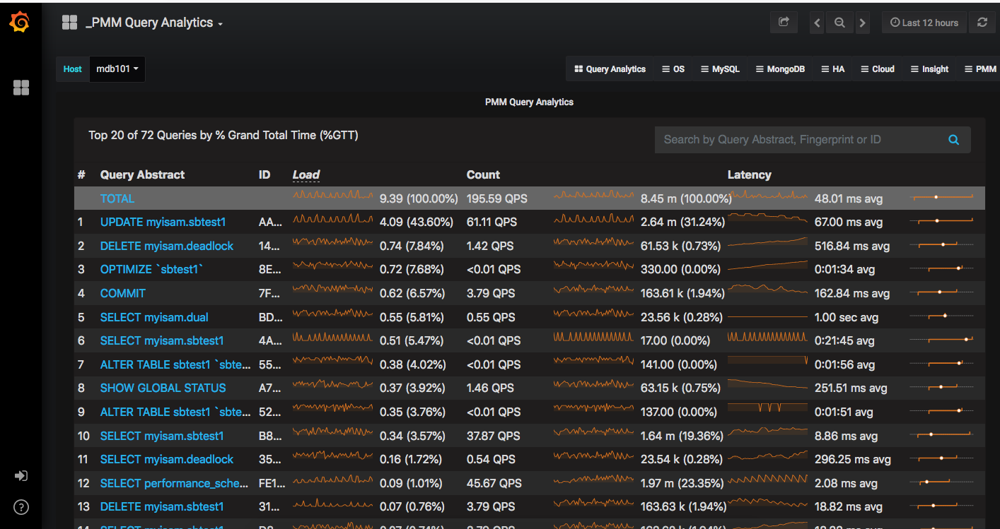

MySQL slowlog
开启slowlog
在/etc/my.cnf 文件加入
# log_slow_queries slow-query-log = on #开启MySQL慢查询功能 slow_query_log_file = /data/mysql/slow.log #设置MySQL慢查询日志路径 long_query_time = 5 #修改为记录5秒内的查询，默认不设置此参数为记录10秒内的查询 log-queries-not-using-indexes = on #记录未使用索引的查询 log_long_format
将在mysql数据目录下( datadir = /var/lib/mysql ) 生成一个如test-slow.log的文件,内容有：
# 查询用了0秒，返回9行，一共查了18行 # Time: 080430 20:06:53 #User@Host: match_account[match_account] @ [10.0.4.114] # Query_time: 0 Lock_time: 0 Rows_sent: 9 Rows_examined: 18 SELECT * FROM `tree_menus` WHERE (parentid = 0) ORDER BY sequence desc, id desc;
show variables like '%slow%'; -- 查看MySQL慢查询是否开启、慢查询日志路径 show global status like '%slow%'; #查看MySQL慢查询状态 set global slow_query_log=ON; -- 开启MySQL慢查询功能 show variables like "long_query_time"; -- 查看MySQL慢查询时间设置，默认10秒 set global long_query_time=5; -- 修改为记录5秒内的查询 select sleep(6); -- 测试MySQL慢查询
简单地排查
grep Rows_examined test-slow.log | sort -g -k9 -r|uniq -u |head -100
# Query_time: 0 Lock_time: 0 Rows_sent: 30 Rows_examined: 24460
# Query_time: 0 Lock_time: 0 Rows_sent: 10 Rows_examined: 24440
# Query_time: 0 Lock_time: 0 Rows_sent: 9 Rows_examined: 24439
# Query_time: 0 Lock_time: 0 Rows_sent: 2 Rows_examined: 24432
# Query_time: 0 Lock_time: 0 Rows_sent: 1 Rows_examined: 24430
# Query_time: 0 Lock_time: 0 Rows_sent: 0 Rows_examined: 12043
# Query_time: 0 Lock_time: 0 Rows_sent: 34 Rows_examined: 2441
# Query_time: 0 Lock_time: 0 Rows_sent: 12 Rows_examined: 1449
# Query_time: 0 Lock_time: 0 Rows_sent: 15 Rows_examined: 30
# Query_time: 0 Lock_time: 0 Rows_sent: 5 Rows_examined: 23
# Query_time: 0 Lock_time: 0 Rows_sent: 6 Rows_examined: 22
# Query_time: 0 Lock_time: 0 Rows_sent: 9 Rows_examined: 18
# Query_time: 0 Lock_time: 0 Rows_sent: 1 Rows_examined: 6
# Query_time: 0 Lock_time: 0 Rows_sent: 1 Rows_examined: 5
# Query_time: 0 Lock_time: 0 Rows_sent: 2 Rows_examined: 2
grep -A 3 -B 2 'Rows_examined: 6148586' slow.log.20180806.1815
# Time: 180806 14:04:52
# User@Host: mysql_prod[mysql_prod] @ [10.101.21.159] Id: 60478298
# Query_time: 27.457408 Lock_time: 0.000000 Rows_sent: 4 Rows_examined: 6148586
use USER_FEEDBACK;
SET timestamp=1533535492;
CALL USER_FEEDBACK.PROC_OPER_ANSWER_LIST_STAT('A002093');
mysqldumpslow
安装了mysql-server后，即随带了mysqldumpslow工具。
mysqldumpslow -h
Option h requires an argument
ERROR: bad option
Usage: mysqldumpslow [ OPTS... ] [ LOGS... ]
Parse and summarize the MySQL slow query log. Options are
--verbose verbose
--debug debug
--help write this text to standard output
-v verbose
-d debug
-s ORDER what to sort by (al, at, ar, c, l, r, t), 'at' is default
al: average lock time # 平均销时间
ar: average rows sent # 平均返回记录数
at: average query time # 平均查询时间
c: count # slow中次数
l: lock time # 错定时间
r: rows sent # 返回记录数
t: query time # 查询时间
-r reverse the sort order (largest last instead of first)
-t NUM just show the top n queries
-a don't abstract all numbers to N and strings to 'S'
-n NUM abstract numbers with at least n digits within names
-g PATTERN grep: only consider stmts that include this string
-h HOSTNAME hostname of db server for *-slow.log filename (can be wildcard),
default is '*', i.e. match all
-i NAME name of server instance (if using mysql.server startup script)
-l don't subtract lock time from total time
mysqldumpslow -t 10 -s ar slow.log # 返回访问次数最多的20个sql语句 mysqldumpslow -s c -t 20 host-slow.log # 返回记录集最多的20个sql mysqldumpslow -s r -t 20 host-slow.log # 返回按查询时间返回前10条里面含有LEFT JOIN的sql语句 mysqldumpslow -t 10 -s t -g "left join" host-slow.log
mysqlsla
- https://github.com/daniel-nichter/hackmysql.com/tree/master/mysqlsla
- http://blog.codenode.com/2015/01/hack-mysql-has-been-retired.html
Install
#安装依赖包 yum install wget perl perl-DBI perl-DBD-MySQL mysql # Can't locate ExtUtils/MakeMaker.pm # 解决：yum install perl-ExtUtils-CBuilder perl-ExtUtils-MakeMaker #进入软件包存放目录 cd /usr/local/src # 下载连接有问题，源代码地址：https://github.com/daniel-nichter/hackmysql.com/tree/master/mysqlsla # 下载mysqlsla: http://download.csdn.net/detail/huawei2772/9713399 wget http://hackmysql.com/scripts/mysqlsla-2.03.tar.gz tar zxvf mysqlsla-2.03.tar.gz cd mysqlsla-2.03 # 配置、编译、安装 perl Makefile.PL make make install
简单命令
#查询记录最多的20个sql语句，并写到select.log中去 mysqlsla -lt slow --sort t_sum --top 20 /data/mysql/127-slow.log >/tmp/select.log #统计慢查询文件为/data/mysql/127-slow.log的所有select的慢查询sql，并显示执行时间最长的100条sql，并写到sql_select.log中去 mysqlsla -lt slow -sf "+select" -top 100 /data/mysql/127-slow.log >/tmp/sql_select.log #统计慢查询文件为/data/mysql/127-slow.log的数据库为mydata的所有select和update的慢查询sql，并查询次数最多的100条sql，并写到sql_num.sql中去 mysqlsla -lt slow -sf "+select,update" -top 100 -sort c_sum -db mydata /data/mysql/127-slow.log >/tmp/sql_num.log -lt log:type slow or general # Sorting the Results t_sum (total query execution time) c_sum (total number of times query appears in log) Rows Examined: re_avg re_sum Rows Sent: rs_avg rs_sum mysqlsla -lt slow -top 20 -sort t_sum /data/slow/slow.log.20180806.1815 >/data/slow/slow_t_sum.log mysqlsla -lt slow -top 20 -sort re_avg /data/slow/slow.log.20180806.1815 >/data/slow/slow_re_avg.log mysqlsla -lt slow -top 20 -sort rs_avg /data/slow/slow.log.20180806.1815 >/data/slow/slow_rs_avg.log
常用分析
#!/bin/sh
# 累积用时最多top50
# 平均扫描行数最多top50
# 平均返回行数最多top50
# 平均锁时间最长top50
# 平均用时最长top50
P=.
F=slow.log.20180806.2201
O="t_sum re_avg rs_avg l_avg t_avg"
for o in $O;do
echo "mysqlsla -lt slow -top 50 -sort $o $P/$F >$P/${F}_$o.log"
mysqlsla -lt slow -top 50 -sort $o $P/$F >$P/${F}_$o.txt
done
.mysqlsla Config File
Reading ~/.mysqlsla is the very first thing mysqlsla does when it starts. Command line options can be set in this file. Example:
atomicstatements statementfilter=+UPDATE,INSERT
Notice: no leading dashes ( or ), no quotations marks ("), and the form option=value when option requires a value. These options are overriden by those given on the real command line.
Command Line Options
Command line options are in the form option but option works too.
logtype (lt) TYPE LOGS
指定日志类型，TYPE must be either slow, general, binary, msl or udl.
abstractin (Ai) N
IN (N,N,N)抽像为IN (N3)，设置-Ai 10后，则进一步抽像为IN (N0-9)
top N
只显示前N个结果，缺省10
statementfilter (sf) CONDTIONS
设置SQL代码过滤。
statement types in the form:[+][TYPE],[TYPE],etc.
The [+] is given only once before the first [TYPE].
[TYPE]:SELECT,CREATE,DROP,UPDATE,INSERT,etc.
metafilter (mf) CONDTIONS
MetaProperty Filter(-mf)
CONDTIONS是一个命令行列表(没有空格):[meta][op][value]，eg.
MetaProperty Names:
[op] is either =, > or <.
-
MetaProperty Names
All Logs c_sum: Total number of times SQL statement appears in log c_sum_p: Percentage that c_sum constitutes of grand total c_sum for all SQL statements in log db: Database used by SQL statement exec: Real execution time of SQL statement when executed on the MySQL server exec_sum: Total real execution time of SQL statement (c_sum * exec) Slow Logs ip: IP address of MySQL connection Lock Time: l_min: Minimum l l_max: Maximum l l_avg: Average l l_sum: Total l l_sum_p: Percentage that l_sum constitutes of grand total l_sum for all SQL statements in log l_sum_nthp: Nth percent of all l values Rows Examined: re: Number of rows examined by SQL statement »Only for metaproperty filter re_min: Minimum re re_max: Maximum re re_avg: Average re re_sum: Total re re_sum_p: Percentage that re_sum constitutes of grand total re_sum for all SQL statements in log Rows Sent: rs: Number of result set rows sent (returned) to client by SQL statement »Only for metaproperty filter rs_min: Minimum rs rs_max: Maximum rs rs_avg: Average rs rs_sum: Total rs rs_sum_p: Percentage that rs_sum constitutes of grand total rs_sum for all SQL statements in log Time t: Execution time of SQL statement »Only for metaproperty filter t_min: Minimum t t_max: Maximum t t_avg: Average t t_sum: Total t t_sump: Percentage that t_sum constitutes of grand total t for all SQL statements in log
输出内容
输出数据报表,非常有利于分析慢查询的原因, 包括执行频率, 数据量, 查询消耗等，格式说明如下:
总查询次数 (queries total), 去重后的sql数量 (unique) 输出报表的内容排序(sorted by) 最重大的慢sql统计信息, 包括 平均执行时间, 等待锁时间, 结果行的总数, 扫描的行总数. Count, sql的执行次数及占总的slow log数量的百分比. Time, 执行时间, 包括总时间, 平均时间, 最小, 最大时间, 时间占到总慢sql时间的百分比. 95% of Time, 去除最快和最慢的sql, 覆盖率占95%的sql的执行时间. Lock Time, 等待锁的时间. 95% of Lock, 95%的慢sql等待锁时间. Rows sent, 结果行统计数量, 包括平均, 最小, 最大数量. Rows examined, 扫描的行数量. Database, 属于哪个数据库 Users, 哪个用户,IP, 占到所有用户执行的sql百分比 Query abstract, 抽象后的sql语句 Query sample, sql语句
除了以上的输出, 官方还提供了很多定制化参数, 是一款不可多得的好工具。
功能说明
藉由分析 General Log，我们可以清楚的得知 MySQL Server 最常执行的 Query 有哪些；观察 Slow Log 则可以让我们得知到底是哪些 Query 造成 MySQL Server 效能低落。知道了这些信息以后我们才有办法对 MySQL Server 进行进一步的调整与最佳化，例如以适当的 Index 提高 MySQL 最常执行的 Query 的效率，或是去除造成 Slow Query 的成因(poor index, join...等)。视您的 MySQL Server 的忙录状态而定，您的 General Log(或 Slow Log) 有可能会非常的庞大，要以肉眼来分析是一项不可能的任务，比较实际的作法是自己撰写 Scripts 去进行 Log 分析。若您不想花时间自行开发程序，不妨试试由 Daniel Nichter 所提供的 mysqlsla。
- 官方网站： http://hackmysql.com/
- 软件下载： http://hackmysql.com/mysqlsla
- hackmysql.com_mysqlsla_20180806_2.0.3.zip
Log 分析步骤
- 开启 MySQL Server 的 General Log 与 Slow Log
- 以 mysqlsla 分析 Log 日志
- 解读报表
开启General Log 与 Slow Log
要分析 Log 档案之前，你当然要先有可以分析的 Log 档案。要开启 MySQL Server 的 General Log 与 Slow Log，需要修改 MySQL Server 的系统设定文件并重新启动 MySQL。 引用:
/etc/my.cnf： [mysqld] log=general-log log-slow-queries=slow-log
mysqlsla 其实是一支 Perl Scripts，使用方式很间单，语法如下：
分析 General Log
mysqlsla -lt slow slow.log -R print-unique -mf "db=foo" -sf "+SELECT"
然后您就可以大致上了解 Server 都在处理些什么东西。
分析 Slow Log
mysqlsla --user=root --password=bjzayh -ex --socket=/tmp/mysql.sock -lt slow slow.log mysqlsla --user=root --password=bjzayh -ex --socket=/tmp/mysql.sock -lt general /data/mysql/test.log --slow：表示要分析的是 Slow Log --ex：使用 EXPLAIN 分析 Query --db：数据库名称：Slow Log 不一定会记录 Query 所属的 Database，这样一来当 Server 要进行 EXPLAIN 时会有问题，因此在这里我们自己指定所使用的 Database。 slow-log： 这里要填入 slow-log 文件名称，若有多个 Log 档案请使用逗号分隔，例如 log1,log2...。
所产生的范例报表如下：（mysqlsla 预设只会列出 Top 10 Query）
mysqlsla --user=root --password=bjzayh -ex --socket=/tmp/mysql.sock -lt general /data/mysql/test.log Report for general logs: /data/mysql/test.log 16.75k queries total, 519 unique Sorted by 'c_sum'
______________________________________________________________________ 001 ___
Count : 5.63k (33.63%)
Connection ID : 281
Database :
Users :
root@192.168.0.145 : 65.15% (3670) of query, 24.05% (4028) of all users
@ : 20.22% (1139) of query, 6.84% (1145) of all users
root@192.168.0.55 : 14.52% (818) of query, 5.67% (950) of all users
root@localhost : 0.11% (6) of query, 5.91% (990) of all users
EXPLAIN : Not a SELECT statement
Query abstract:
SET autocommit=N
Query sample:
SET autocommit=1
______________________________________________________________________ 002 ___
Count : 2.92k (17.43%)
Connection ID : 424
Database : cacti
Users :
cacti@localhost : 100.00% (2920) of query, 57.46% (9625) of all users
EXPLAIN : Not a SELECT statement
Query abstract:
INSERT INTO poller_output (local_data_id, rrd_name, time, output) VALUES (N, 'S', 'S', 'S')1
Query sample:
insert into poller_output (local_data_id, rrd_name, time, output) values (8, 'users', '2009-03-10 10:30:01', '1')
有了这些信息后，下一步就是要进行 Query 的最佳化，与 Server 系统参数的调校。
使用说明
分析mysql慢查询日志的好工具--mysqlsla 2011-04-19 10:51:59
mysql数据库的慢查询日志是非常重要的一项调优辅助日志，但是mysql默认记录的日志格式阅读时不够友好，这是由mysql日志记录规则所决定的，捕获一条就记录一条，虽说记录的信息足够详尽，但如果将浏览慢查询日志做为一项日常工作，直接阅读mysql生成的慢查询日志就有可能比较低效了。
除了操作系统命令直接查看slowlog外，mysql自己也提供了一个阅读slowlog的命令行工具：mysqldumpslow，该命令行提供了一定的分析汇总功能，可以将多个类似的SQL语句抽象显示成一个，不过功能还是有些简陋，除此之外，还有不少的第三方工具，可用于分析mysql慢查询日志，其中，三思用了一阵子mysqlsla，感觉简单又易用。
mysqlsla不仅仅可用来处理慢查询日志，也可以用来分析其它日志比如二进制日志，普通查询日志等等，其对sql语句的抽象功能非常实用，参数设定简练易用，很好上手。
当前mysqlsla的最新版本为2.03，可以下拉到官网下载，地址如下： http://hackmysql.com/scripts/mysqlsla-2.03.tar.gz
mysqlsla是perl编写的脚本，运行mysqlsla需要perl-DBI和per-DBD-Mysql两模块的支持，因此在运行mysqlsla前需要首先安装DBI模块和相应的数据库DBD驱动，而默认情况下linux不安装这两个模块，需要自行下载安装，下载地址如下： http://www.cpan.org/modules/by-module/DBI/DBI-1.608.tar.gz http://www.cpan.org/modules/by-module/DBD/DBD-mysql-4.011.tar.gz
DBI的编译安装步骤如下：
tar xvfz DBI-1.608.tar.gz cd DBI-1.608 perl Makefile.PL make make test make install
DBD-mysql驱动模块的编译安装步骤如下：
tar xvfz DBD-mysql-4.011.tar.gz cd DBD-mysql-4.011 perl Makefile.PL make make install
需要注意，在安装DBD-mysql时需要用到mysql_config，该命令包含在MySQL-devel安装包中，如果当前系统中没有安装该软件，需要首先安装MySQL-devel，否则DBD-mysql在编译过程中会出现错误。
准备工作完全，就可以安装mysqlsla了，编译安装步骤如下：
tar xvfz mysqlsla-2.03.tar.gz cd mysqlsla-2.03 perl Makefile.PL make make install
mysqlsla命令默认会保存在/usr/bin路径下，通常可在任意路径下直接执行。对慢查询日志文件的分析，最简化的调用方式如下：
mysqlsla -lt slow [SlowLogFilePath] > [ResultFilePath]
比如说，原始慢日志中有一堆的下列语句：
# Time: 110417 0:00:09 # User@Host: junsansi[junsansi] @ [192.168.1.27] # Query_time: 3 Lock_time: 0 Rows_sent: 1 Rows_examined: 17600 select min(DOC_HIS_ID) AS DOC_HIS_ID from t_******** where DOC_HIS_ISTEAMMATE=1 and DOC_HIS_EDITOR_USER_ID_ENCRYPT='nfEACAwQEW1MICAN2'; # User@Host: junsansi[junsansi] @ [192.168.1.27] # Query_time: 4 Lock_time: 0 Rows_sent: 1 Rows_examined: 17600 select min(DOC_HIS_ID) AS DOC_HIS_ID from t_******** where DOC_HIS_ISTEAMMATE=1 and DOC_HIS_EDITOR_USER_ID_ENCRYPT='nfEACAwQEW2MICAN2'; # User@Host: jss[junsansi] @ [192.168.1.26] # Query_time: 4 Lock_time: 0 Rows_sent: 1 Rows_examined: 17600 select min(DOC_HIS_ID) AS DOC_HIS_ID from t_******** where DOC_HIS_ISTEAMMATE=1 and DOC_HIS_EDITOR_USER_ID_ENCRYPT='nfEACAwQEW3MICAN2'; # User@Host: junsansi[junsansi] @ [192.168.1.27] # Query_time: 3 Lock_time: 0 Rows_sent: 1 Rows_examined: 17600 select min(DOC_HIS_ID) AS DOC_HIS_ID from t_******** where DOC_HIS_ISTEAMMATE=1 and DOC_HIS_EDITOR_USER_ID_ENCRYPT='nfEACAwQEW4MICAN2'; # User@Host: jss[junsansi] @ [192.168.1.26] # Query_time: 5 Lock_time: 0 Rows_sent: 1 Rows_examined: 17600 select min(DOC_HIS_ID) AS DOC_HIS_ID from t_******** where DOC_HIS_ISTEAMMATE=1 and DOC_HIS_EDITOR_USER_ID_ENCRYPT='nfEACAwQEW5MICAN2'; .................... ....................
直接阅读的操作体验很不好，使用mysqlsla处理后，结果呈现如下：
Count : 23 (8.52%)
Time : 102 s total, 4.434783 s avg, 3 s to 7 s max (6.79%)
95% of Time : 88 s total, 4.190476 s avg, 3 s to 6 s max
Lock Time (s) : 0 total, 0 avg, 0 to 0 max (0.00%)
95% of Lock : 0 total, 0 avg, 0 to 0 max
Rows sent : 1 avg, 1 to 1 max (0.02%)
Rows examined : 11.53k avg, 5.70k to 17.60k max (1.07%)
Database : jssdb
Users :
junsansi@ 192.168.1.27 : 86.96% (20) of query, 11.11% (30) of all users
jss@ 192.168.1.26 : 13.04% (3) of query, 2.96% (8) of all users
Query abstract:
SELECT MIN(doc_his_id) AS doc_his_id FROM t_******** WHERE doc_his_isteammate=N AND doc_his_editor_user_id_encrypt='S';
Query sample:
select min(DOC_HIS_ID) AS DOC_HIS_ID from t_******** where DOC_HIS_ISTEAMMATE=1 and DOC_HIS_EDITOR_USER_ID_ENCRYPT='nfEACAwQEW2MICAN2';
在上述结果中，语句的执行情况(执行次数，对象信息，查询记录量，时间开销，来源统计)等信息一目了然，比较便于DBA进一步分析了。
Percona Toolkit
Percona Toolkit is a collection of advanced open source command-line tools, developed and used by the Percona technical staff, that are engineered to perform a variety of MongoDB and MySQL server and system tasks that are too difficult or complex to perform manually. With over 1,500,000+ downloads, Percona Toolkit supports Percona Server for MySQL, MySQL, MariaDB®, Percona Server for MongoDB and MongoDB.
